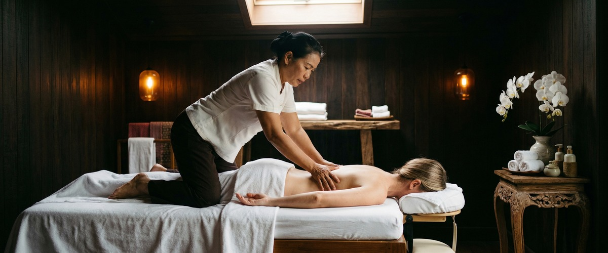

If you are dealing with a sharp, shooting pain that travels from your lower back down through your leg, you may be experiencing sciatica.

It is one of the most disruptive forms of nerve pain. It makes it hard to sit, stand, walk, or sleep.
Thai massage for sciatica is a well-established way to manage that pain. It releases the muscle tension that adds to nerve compression and restores movement to a body that has locked up around the discomfort.
Sciatica is pain that travels along the path of the sciatic nerve. This is the longest nerve in the body, running from the lower spine through the buttock and down each leg.
The pain usually affects one side and is often described as shooting, burning, or electric. Numbness, tingling, and weakness in the leg or foot are also common.
Around 90% of sciatica cases are caused by a herniated or slipped disc pressing on the nerve root. Other causes include spinal stenosis, spondylolisthesis, and piriformis syndrome.
In piriformis syndrome, a muscle in the buttock presses directly on the sciatic nerve. Symptoms can appear suddenly after heavy lifting or build up slowly over time.
When muscles around the sciatic nerve become tight, they add pressure to the nerve and make the pain worse. Research published on PubMed found massage therapy cut low back pain and increased range of motion in a client who had daily sciatica symptoms for nine months.
Releasing tight muscles is often the key to breaking the pain cycle.
Traditional Thai Massage uses assisted stretching, acupressure, and work along the body's sen energy lines. This makes it well suited to sciatica. The stretching gently takes pressure off the lumbar spine and opens the hip flexors.
Thai Sports Massage targets the piriformis and gluteal muscles directly. Tension in these areas is often a main driver of sciatic pain.
Thai Oil Massage adds to this with flowing pressure strokes along the lower back and leg. It boosts circulation, reduces swelling in the soft tissue, and calms the nervous system. Together, these methods tackle both the physical causes and the pain response itself.
At Thai Massage Greenock on South Street in Greenock, your session starts with a conversation about your symptoms. Jariya will ask where the pain begins, how far it travels, what helps or worsens it, and how long you have had it.
Jariya is a Wat Po trained therapist. She uses this to shape your treatment rather than following a set routine.
For sciatica, sessions typically focus on the lower back, gluteal muscles, piriformis, and the full length of the affected leg. Jariya combines assisted stretching with targeted pressure work, adjusting depth and technique based on how your body responds.
You can book your session online and note your sciatica symptoms in the booking form so the session is planned around your needs from the start.
Sciatica massage is especially useful for people whose daily habits keep the condition active. Office workers who sit for long hours press on the sciatic nerve all day. Drivers, tradespeople, and manual workers put repeated strain on the lower back.
Runners and cyclists develop tight hip flexors and piriformis muscles that press on the nerve over time. Pregnant women with sciatic pain in the second and third trimester also respond well to gentle, targeted massage.
If you are managing recurring or chronic sciatic pain in Inverclyde, book a treatment at Thai Massage Greenock and start addressing the root cause of your discomfort.
In most cases, massage is safe and helpful for sciatica when done by a trained therapist who understands the condition. Deep pressure applied without care over an inflamed nerve can cause a short-term flare.
This is why working with a qualified therapist like Jariya at Thai Massage Greenock matters. Always tell your therapist about your symptoms, pain level, and any recent diagnosis before your session starts.
Some clients notice a real drop in pain after one session, especially where tight muscles are the main cause. For longer-standing or recurring sciatica, weekly sessions over four to six weeks are more likely to bring lasting relief.
Your therapist will track your progress and adjust the approach as you go.
Traditional Thai Massage and Thai Sports Massage both work well for sciatica. They combine assisted stretching with targeted pressure on the gluteal muscles, piriformis, and lower back.
Thai Oil Massage is a strong choice if your pain spreads along the leg. It works along the full soft tissue path of the sciatic nerve using flowing pressure strokes.
Massage and painkillers work in different ways. Painkillers reduce the pain signal but do not change the muscle tension or nerve compression causing it. Massage works on the physical causes directly, improving range of motion and reducing the pressure driving the pain.
Many clients find regular massage lowers their need for over-the-counter pain relief. That said, always speak to your GP if your symptoms are severe or getting worse.
If pain is severe and movement is very limited, it is best to wait until the inflammation settles before booking a full session. Gentle, light-pressure massage can still help in early recovery.
Contact Thai Massage Greenock to talk through your symptoms. Jariya will advise on the right time and approach for your situation.
According to NHS guidance on sciatica, most cases improve within four to six weeks with self-care. But without tackling the muscle imbalances and habits that caused the problem, it often comes back.
Regular massage helps manage the tension that puts the sciatic nerve at risk. It is a useful part of long-term care, not just a one-off fix.